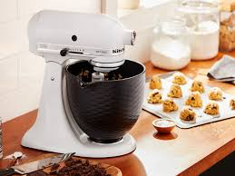
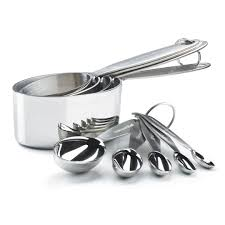
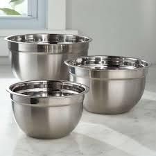

Must-Have Baking Tools
Essential tools for baking and their uses!

Electric Mixer
Perfect for mixing batter, whipping cream, and kneading dough.

Measuring Cups & Spoons
Accurate measurements are key to consistent bakes every time. You can also use a food scale.

Mixing Bowls
Essential for mixing together batters and fillings.